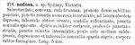

Click on images to enlarge
{kind=link}

Paropsis nodosa, description
Name
Trachymela nodosa (Chapuis, 1877)
Type specimen
Not examined.
Original description
[Original description shown in figure, translated from Latin using ChatGPT]
Somewhat rounded, convex, reddish-brown; pronotum densely finely punctured, with numerous larger punctures intermixed, with a depression on the side and ornamented with a blunt tubercle; scutellum somewhat heart-shaped, with a few scattered punctures; elytra finely costate, deeply punctate-striate, with minute punctures between the striae; slightly depressed a little before the middle, the depression with a few scattered black tubercles; underside ferruginous.
Length 5 mm.
Locality: Sydney, Victoria.
Notes
Blackburn (1897) deals with T. nodosa as part of his subgroup iv (i.e., those species whose "greatest height" is considerably in front of the middle of the elytral margin). Within that group, he characterises it as:
(1) pronotum not (or scarcely) explanate at sides;
(2) the verrucae are unpunctured, or nearly so;
(3) the elytra do not have a sharply defined transverse wheal-like ridge;
(4) there is no subhumeral depression;
(5) the elytral interstices are not so rugulose as to obscure the punctures and verrucae;
(6) the elytra (at least on the hinder part) are studded with sharply-defined, bead-like verrucae; and
(7) the verrucae are relatively large (larger than in allied species)
Blackburn's concept of this species does not seem to completely agree with that of Chapuis, as Chapuis makes no mention of relatively conspicuous tubercles on the posterior section of the elytra.
References
Blackburn, T. 1897, "Revision of the genus Paropsis. Part II", Proceedings of the Linnean Society of New South Wales, vol. 22, 166-189 (page 168).
Chapuis, F. 1877, "Synopsis des espèces du genre Paropsis", Annales de la Société Entomologique de Belgique (Comptes-rendus), vol. 20, 67-101 (page 96).
Copyright © 2026. All rights reserved.